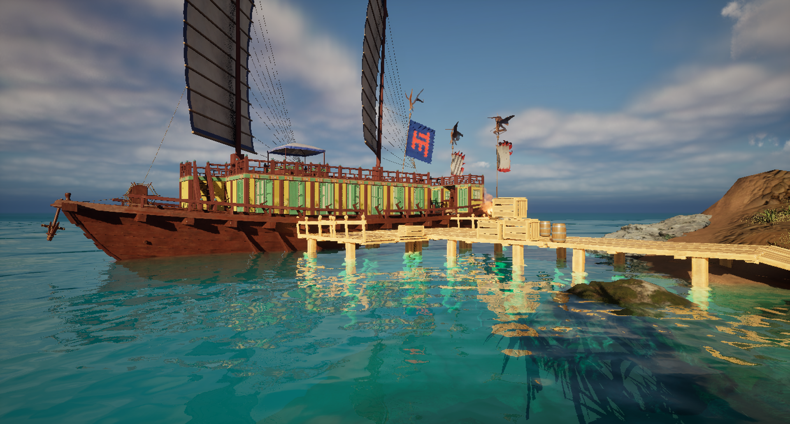

UNREAL ENGINE 5 / BLUEPRINTS
PIRATA.
SOBRE O PROJETO
Um projeto de jogo construído sistema por sistema.
Pirata é um projeto desenvolvido na Unreal Engine 5, com foco na implementação de mecânicas de gameplay, combate, interação com objetos e gerenciamento de inimigos.
Durante o desenvolvimento, foram construídos sistemas utilizando Blueprints, incluindo controle de combate, ondas de inimigos e condições de vitória e derrota. O projeto foi realizado em contexto de curso, com orientação e utilização de alguns assets gratuitos disponibilizados durante o aprendizado.
01 / GAMEPLAY
Veja o projeto em ação.
Demonstração visual da experiência e das mecânicas implementadas no jogo.
02 / ELEMENTOS DO JOGO
Explore as mecânicas.
Selecione um elemento para conhecer melhor os sistemas e as mecânicas presentes no projeto.
Wave System
Um sistema responsável por organizar as ondas de inimigos, controlar os spawns e distribuir os adversários durante a partida. Confira a lógica dos Blueprints e a execução do sistema no jogo.
03 / DESENVOLVIMENTO
Sistemas e tecnologias.
O projeto explora a construção de mecânicas e a comunicação entre diferentes elementos de gameplay, utilizando programação visual para estruturar comportamentos e regras da partida.